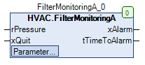

FilterMonitoringA (FB)¶
FUNCTION_BLOCK FilterMonitoringA
Kurzbeschreibung¶
Erkennung einer Filterverschmutzung und Erzeugung einer StörmeldungTypische Anwendung: Überwachung der Verschmutzung eines Luftfilters mit einem Differenzdruckfühler
Darstellung¶

Funktionsbeschreibung¶
Allgemeines¶
Dieser Funktionsbaustein dient zur Erkennung einer Filterverschnmutzung durch die Auswertung des Eingangs für den Differenzdruckfühler rPressure.
Überschreitet der Differenzdruck rPressure während der Meldeverzögerung udiControlTime permanent den Grenzwert rControlPressure,
( Voraussetzung: Freigabe der Überwachung xControl ist aktiv ( = TRUE )) so wird der Alarmausgang xAlarm aktiv ( = TRUE ).
Freigabe der Überwachung xControl¶
Die Überwachung kann generell freigegeben ( = TRUE ) oder gesperrt ( = FALSE ) werden.
Bei nicht freigegebener Überwachung wird der Ausgang - Störmeldung xAlarm deakziviert ( = FALSE ) und die Zeitdauer bis zur Auslösung der Störmeldung tTimeToAlarm nimmt den Wert 0s an.
Ausgang - Störmeldung xAlarm¶
Der Ausgang - Störmeldung xAlarm wird aktiviert ( xAlarm = TRUE ), falls die unten stehende Bedingung 1 erfüllt ist.
Bedingung 1:
Der Eingang für den Differenzdruckfühler rPressure ist mindestens während der Meldeverzögerung udiControlTime permanent größer als der maximal zulässige Differenzdruck rControlPressure ( = Filterverschmutzung ).
Gleichzeitig ist die Überwachung generell freigegeben ( xControl = TRUE ).
Der Ausgang - Störmeldung xAlarm wird in folgenden Fällen deaktiviert ( xAlarm = FALSE ):
Fall 1: Die Bedingung 1 ist nicht erfüllt und die Rücksetzung der Störmeldung xQuit ist aktiv ( = TRUE ).
Fall 2: Die Bedingung 1 ist nicht erfüllt und die Freigabe der Überwachung xControl ist nicht aktiv ( = FALSE ).
Zeitdauer bis zur Auslösung der Störmeldung tTimeToAlarm¶
Am Ausgang tTimeToAlarm werden je nach Betriebssituation unterschiedliche Werte dargestellt:
Situation 1: Ausgabe der Restzeitdauer bis zur Auslösung der Störmeldung ( Bedingungen: rPressure > rControlPressure, xControl = TRUE )
Situation 2: Falls die Situation 1 nicht vorliegt, so wird permanent der Wert 0.0 ausgegeben.
Visualisierung¶
Codesys¶
- InOut:
Scope Name Type Initial Comment Input rPressure REAL Eingang - Differenzdruckfühler in Pa xQuit BOOL FALSE Eingang - Rücksetzung - Störmeldung (Auslösung über steigende Flanke) udiControlTime UDINT 300 Meldeverzögerung in Sekunden (1 - 3600s) rControlPressure REAL 200 Maximaler Differenzdruck über dem Filter in Pa xControl BOOL TRUE Freigabe der Überwachung (FALSE = Aus, TRUE = Ein) Output xAlarm BOOL Ausgang - Störmeldung (FALSE = Aus, TRUE = Ein) tTimeToAlarm TIME Zeitdauer bis zur Auslösung der Störmeldung in Sekunden